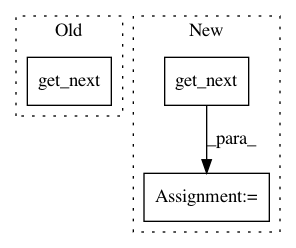

c611d9b6b35e44326bc18096dc57abe18eb6c90b,tf_agents/replay_buffers/tf_uniform_replay_buffer_test.py,TFUniformReplayBufferTest,testMultiStepSampling,#TFUniformReplayBufferTest#Any#,208
Before Change
action = tf.stack([tf.Variable(0).count_up_to(10)] * batch_size)
add_op = replay_buffer.add_batch(action)
(step, next_step), _ = replay_buffer.get_next(num_steps=2,
time_stacked=False)
self.evaluate(tf.compat.v1.global_variables_initializer())
for _ in range(10):
self.evaluate(add_op)
After Change
if tf.executing_eagerly():
sample = lambda: replay_buffer.get_next(num_steps=2, time_stacked=False)
else:
sample = replay_buffer.get_next(
num_steps=2, time_stacked=False)
self.evaluate(tf.compat.v1.global_variables_initializer())
self.evaluate(add_data())
In pattern: SUPERPATTERN
Frequency: 4
Non-data size: 3
Instances
Project Name: tensorflow/agents
Commit Name: c611d9b6b35e44326bc18096dc57abe18eb6c90b
Time: 2019-02-27
Author: oars@google.com
File Name: tf_agents/replay_buffers/tf_uniform_replay_buffer_test.py
Class Name: TFUniformReplayBufferTest
Method Name: testMultiStepSampling
Project Name: tensorflow/models
Commit Name: 4cfa0d3b43ee31bb082b218c12a2e9996498c015
Time: 2017-11-06
Author: neal@nealwu.com
File Name: official/mnist/mnist.py
Class Name:
Method Name: input_fn
Project Name: weinman/cnn_lstm_ctc_ocr
Commit Name: d6053d21cb5105950f29cf8d17c4da1ef0370383
Time: 2018-06-22
Author: gaffordb@grinnell.edu
File Name: src/train.py
Class Name:
Method Name: _get_input
Project Name: tensorflow/datasets
Commit Name: b3adc767d6963689cdcf943f0bb49b9356dd1d43
Time: 2018-11-15
Author: rsepassi@google.com
File Name: tensorflow_datasets/video/bair_robot_pushing.py
Class Name: BairRobotPushing
Method Name: _generate_samples